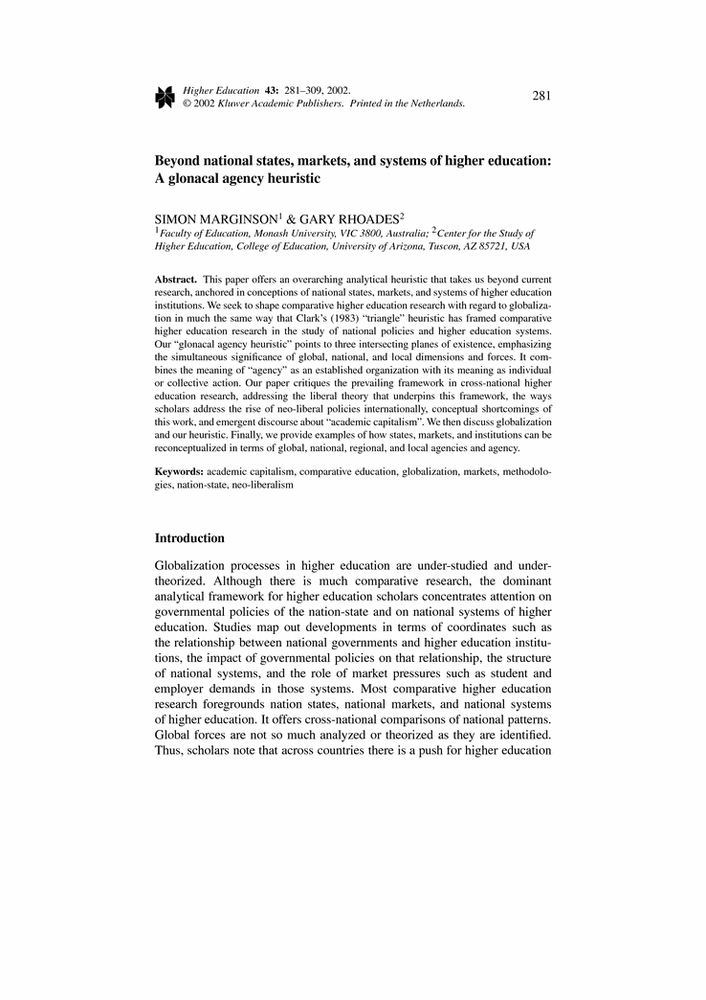
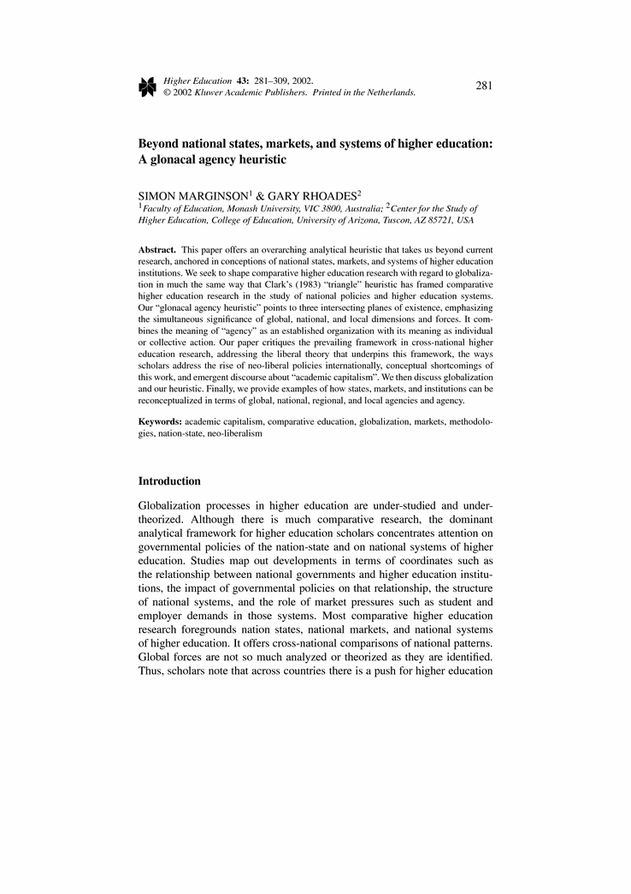

Beyond national states, markets, and systems of higher education: A glonacal agency heuristic
- Simon Marginson,
- Gary Rhoades
- … show all 2 hide
Abstract
This paper offers an overarching analyticalheuristic that takes us beyond currentresearch, anchored in conceptions of nationalstates, markets, and systems of highereducation institutions. We seek to shapecomparative higher education research withregard to globalization in much the same waythat Clark's (1983) ``triangle'' heuristic hasframed comparative higher education research inthe study of national policies and highereducation systems. Our ``glonacal agencyheuristic'' points to three intersecting planesof existence, emphasizing the simultaneoussignificance of global, national, and localdimensions and forces. It combines the meaningof ``agency'' as an established organization withits meaning as individual or collective action. Our paper critiques the prevailing framework incross-national higher education research,addressing the liberal theory that underpinsthis framework, the ways scholars address therise of neo-liberal policies internationally,conceptual shortcomings of this work, andemergent discourse about ``academic capitalism''. We then discuss globalization and ourheuristic. Finally, we provide examples of howstates, markets, and institutions can bereconceptualized in terms of global, national,regional, and local agencies and agency.

 

- Altbach, P.G. (2001). 'Academic freedom: International realities and challenges', Higher Education 41(1-2), 205-219.
- Altbach, P.G. and Chait, R. (2001). 'Introduction', Higher Education 41(1-2), 1-2.
- Altbach, P.G. and Selvaratnam, V. (eds.) (1989). From Dependence to Autonomy: The Development of Asian Universities. Dordrecht, The Netherlands: Kluwer Academic Publishers.
- Appadurai, A. (1996). Modernity at Large: Cultural Dimensions of Globalisation. Minneapolis: University of Minnesota Press.
- Becher, T. and Kogan, M. (1992). Process and Structure in Higher Education, 2nd edn. London: Heinemann.
- Becher, T. and Kogan, M. (1980). Process and Structure in Higher Education, 1st edn. London: Heinemann.
- Breneman, D. and Youn, T. (1988). Academic Labor Markets and Careers. NewYork: Falmer Press.
- Burbules, N.C. (2000). 'Does the Internet constitute a global educational community?', in Burbules, N.C. and Torres, C.A. (eds.), Globalization and Education: Critical Perspectives. New York: Routledge, pp. 323-356.
- Caplow, T. and McGee, R. (1958). The Academic Marketplace. New York: Basic Books.
- Cartter, A.M. (1976). PhD's and the Academic Labor Market. New York: McGraw-Hill.
- Cerych, L. and Sabatier, P. (1986). Great Expectations and Mixed Performance: The Implementation of Higher Education Reforms in Europe. Stoke on Trent: Trentham Books.
- Chen, T.M. and Barnett, G.A. (2000). 'Research on international student flows from a macro perspective: A network analysis of 1985, 1989, and 1995', Higher Education 39(4), 435- 453.
- Clark, B.R. (1998). Creating Entrepreneurial Universities: Organizational Pathways of Transformation. Oxford: Pergamon.
- Clark, B.R. (1996). 'Substantive growth and innovative organization: New categories for higher education research', Higher Education 32(4), 417-430.
- Clark, B.R. (1983). The Higher Education System: Academic Organization in Cross-National Perspective. Los Angeles: University of California Press.
- Clark, B.R. (1978). 'Academic differentiation in national systems of higher education', Comparative Education Review 22, 242-258.
- Currie, J. and Newson, A.J. (1998). Universities and Globalization. Thousand Oaks, California: Sage Publications.
- de Weert, E. (2001). 'Pressures and prospects facing the academic profession in the Netherlands', Higher Education 41(1-2), 77-101.
- Enders, J. (2001). 'A chair system in transition: Appointments, promotions, and gatekeeping in German higher education', Higher Education 41(1-2), 3-25.
- Geiger, R. (1996). Private Sectors in Higher Education: Structure, Functions, and Change in Eight Countries. Ann Arbor: University of Michigan Press.
- Goedegebuure, L. and van Vught, F. (1996). 'Comparative higher education studies: The perspective from the policy sciences', Higher Education 32(4), 371-394.
- Gornitzka, A. (1999). 'Governmental policies and organisational change in higher education', Higher Education 38(1), 5-31.
- Harman, G. (1999). 'Australian science and technology academics and university-industry research links', Higher Education 38(1), 83-103.
- Hayek, F.A. (1960). The Constitution of Liberty. London: Routledge and Kegan Paul.
- Held, D., McGrew, A., Goldblatt, D. and Perraton, J. (1999). Global Transformations. Stanford: Stanford University Press.
- Henkel, M. (1999). 'The modernisation of research evaluation: The case of the UK', Higher Education 38(1), 105-122.
- Kogan, M. (1996). 'Comparing higher education systems', Higher Education 32(4), 395-402.
- Kogan, M. and Hanney, S. (2000). Reforming Higher Education. London: Jessica Kingsley Publishers.
- Levy, D. (1996). Higher Education and the State in Latin America: Private Challenges to Public Dominance. Chicago: University of Chicago Press.
- Marginson, S. (1997). Markets and Education. Sydney: Allen and Unwin.
- Marginson, S. and Considine, M. (2000). The Enterprise University: Power, Governance and Reinvention in Australia. Cambridge: Cambridge University Press.
- Marginson and Mollis (forthcoming). '“The door opens and the tiger leaps”: Theories and reflexivities of comparative education for a global millenium', Comparative Education Review.
- Meek, V.L., Goedegebuure, L., Kivenen, O. and Rinne, R. (eds.) (1996). The Mockers and the Mocked. Comparative Perspectives on Differentiation, Convergence and Diversity in Higher Education. Oxford: Pergamon.
- Neave, G. (1998). 'The evaluative state reconsidered', European Journal of Education 33(3), 265-284.
- Neave, G. (1996). 'Comparing higher education systems', Higher Education 32(4), 395-402.
- Neave, G. (1988). 'On the cultivation of quality, efficiency, and enterprise: An overview of recent trends in higher education in Western Europe, 1986–1988', European Journal of Education 23(1/2), 7-23.
- Neave, G. and van Vught, F. (eds.) (1991). Prometheus Bound: The Changing Relationship Between Government and Higher Education in Western Europe. Oxford: Pergamon Press.
- Neave, G. and van Vught, F. (eds.) (1994). Government and Higher Education Relationships Across Three Continents. Oxford: Pergamon Press.
- Organisation for Economic Cooperation and Development (OECD) (2000). Education at a Glance. Paris: OECD.
- Ortmann, A. (2000). Capital Romance: Why Gordon Gekko Fell in Love with Higher Education. Virginia project on the economics of higher education. Working paper. Charlottesville: Curry School of Education, University of Virginia.
- Pusser, B. (2000). 'The role of the state in the provision of higher education in the United States', Australian Universities Review 42(2)-43(1), 24-35.
- Rhoades, G. (1998). Managed Professionals: Unionized Faculty and Restructuring Academic Labor. Albany, New York: State University of New York Press.
- Rhoades, G. (1992). 'Beyond the state: Interorganizational relations and state apparatuses in post-secondary education', in Smart, J.C. (ed.) Higher Education: Handbook of Theory and Research, Volume VIII. New York: Agathon Press.
- Rhoades, G. and Smart, D. (1996). 'The political economy of entrepreneurial culture in higher education: Policies towards foreign students in Australia and the United States', in Kempner, K. and Tierney, W.G. (eds.), The Social Role of Higher Education: Comparative Perspectives. New York: Garland.
- Salter, B. and Tapper, T. (1994). The State and Higher Education. London: Woburn Press.
- Slaughter, S. (1990). The Higher Learning and High Technology: The Dynamics of Higher Education Policy Formation. Albany, New York: State University of New York Press.
- Slaughter, S. (2001). 'Problems in comparative higher education: Political economy, political sociology, and postmodernism', Higher Education 41(4), 389-412.
- Slaughter, S. and Leslie, L.L. (1997). Academic Capitalism: Politics, Policies, and the Entrepreneurial University. Baltimore: Johns Hopkins University Press.
- Smith, A. (1776/1979). The Wealth of Nations. Harmondsworth: Penguin.
- Sporn, B. (1999). Adaptive University Structures. London: Jessica Kingsley.
- Sporn, B., Westerheijden, D. and Valimaa, J. (2000). Globalization and Higher Education: Processes and Alternatives in Europe. Paper presented at European Association of Institutional Research, September, Berlin.
- Stromquist, N.P. (2001). 'Gender studies: A global perspective of their evolution, contribution, and challenges to comparative higher education', Higher Education 41(4), 373-387.
- Subotzky, G. (1999). 'Alternatives to the entrepreneurial university: New modes of knowledge production in community service programs', Higher Education 38(4), 401-440.
- Teichler, U. (1993). 'Research on higher education in Europe: Some aspects of recent developments', in Frackmann, E. and Maassen, P. (eds.), Towards Excellence in European Higher Education in the 90s. Proceedings of the 11th European AIR Forum, University of Trier, August 1989, EAIR.
- Teichler, U. (1996). 'Comparative higher education: Potentials and limits', Higher Education 32(4), 431-465.
- Tierney, W.G. (2001). 'The autonomy of knowledge and the decline of the subject: Postmodernism and the reformulation of the university', Higher Education 41(4), 353-372.
- Van de Graaff, J.H., Clark, B.R., Furth, D., Goldschmidt, D. and Wheeler, D. (1978). Academic Power: Patterns of Authority in Seven National Systems. New York: Praeger.
- Van Mannen, J. (1983). 'Golden passports: Managerial socialization and graduate education', The Review of Higher Education 6(4), 435-455.
- Williams, G. (1992). Changing Patterns of Finance in Higher Education. Buckingham, U.K., and Philadelphia, U.S.: Society for Research into Higher Education and Open University Press.
- Title
- Beyond national states, markets, and systems of higher education: A glonacal agency heuristic
- Journal
-
Higher Education
Volume 43, Issue 3 , pp 281-309
- Cover Date
- 2002-04-01
- DOI
- 10.1023/A:1014699605875
- Print ISSN
- 0018-1560
- Online ISSN
- 1573-174X
- Publisher
- Kluwer Academic Publishers
- Additional Links
- Topics
- Keywords
-
- academic capitalism
- comparative education
- globalization
- markets
- methodologies
- nation-state
- neo-liberalism
- Authors
-
- Simon Marginson (1)
- Gary Rhoades (2)
- Author Affiliations
-
- 1. Faculty of Education, Monash University, VIC, 3800, Australia
- 2. Center for the Study of Higher Education, College of Education, University of Arizona, Tuscon, AZ, 85721, USA